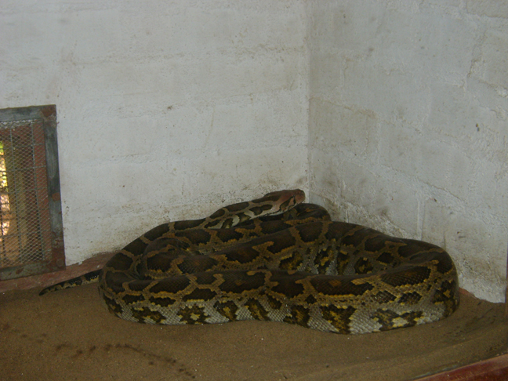

Let’s go
So here we have it. The very first post written for the Python North Queensland (PyNQ) users group. If you’re reading this, it means something did work or else you’re in the wrong place. If you’re looking for one of these sorts of pythons:
then you’ll probably be somewhat disappointed. Typically, the audience is the sort of person we’re targetting is the one interested in this sort of Python:
That’s the Python programming language rather than an actual python (see: snake) or Monty Python (see: humour). If this makes no sense to you, then welcome! You are just the person we’re looking for to join us. We do encourage both snakes and fans of Monty Python to attend, though so don’t feel afraid to join us even if you don’t know what Python programming is.
Still with me? Wow, I must have made some impression.
At present, this group is in its infancy; a twinkle in the eye, as it were. The good news is that with just a little interest, and effectively no work on anyone’s part, we can manage to make something great happen. If you’re interested in meeting up casually to talk about programming, technology, life, and of course Python, then sing out.
At present, the base of operations would be Townsville. Depending on interest in the future, we’ll certainly look at expanding to Cairns and possibly other centres. I’m unsure just how many Pythonistas are out in Mount Isa or Emerald, but if you’re out there, don’t be shy.
So far, we’re gathering interest, so ping me, David, on Twitter or GitHub and express your existence! We’re North Queensland-based – that’s Australia, by the way, in case you’re really, really lost.
If you’re a coder in Cooktown or Cairns or a technologist in Townsville or Tully and you work with Python, open source, or other fun loosely-related (heck, it doesn’t even need to be related!), then sing out and let’s meet up on a semi-regular basis. We can even do something video-conference related if you can’t travel the distance.